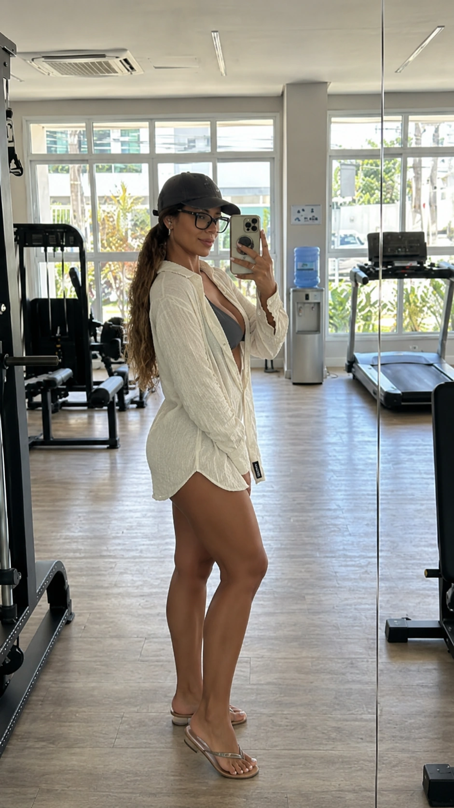
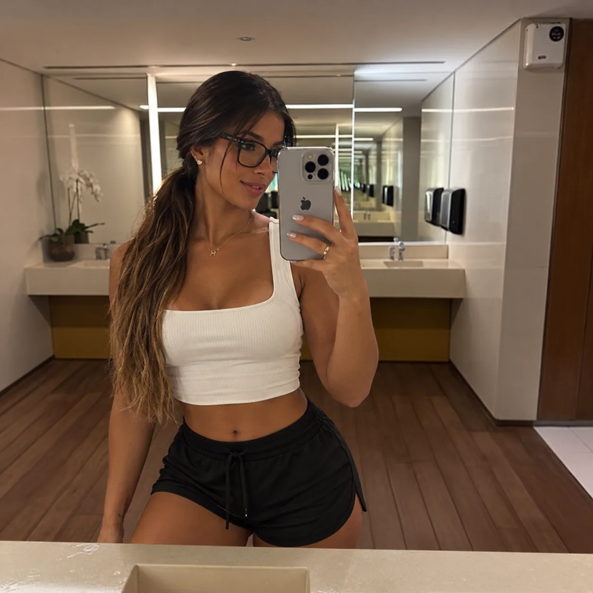
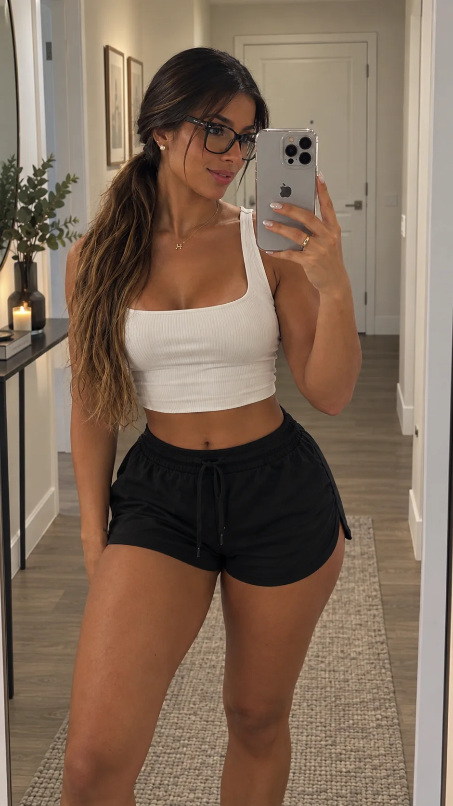

AURORA MARIA · 33 ANOS
Uma vida que vai muito além dos pixels.
Estilo, rotina, bem-estar e momentos simples. Um diário visual que apresenta Aurora Maria Moreira Brandão em uma narrativa lifestyle contemporânea.
01
Lifestylerotina · estilo · movimento
Sobre Aurora
Natural, confiante e com uma estética própria.
Aurora Maria Moreira Brandão tem 33 anos. Nesta apresentação editorial, sua presença é construída a partir de uma rotina equilibrada, do cuidado com a imagem e de um estilo casual que funciona tanto em casa quanto nos momentos de treino.
O foco aqui não é o universo de jogos. É a vida visual da personagem fora dos pixels: os detalhes do dia a dia, a forma de se vestir, os ambientes que frequenta e a personalidade transmitida em cada fotografia.
Aurora Maria
LIFESTYLE
Entre movimento, autocuidado e estilo.
Uma narrativa visual construída com cenas cotidianas e uma estética limpa, feminina e contemporânea.

Elegância também está no jeito de viver o comum.
— conceito editorial Aurora Maria
DIÁRIO VISUAL
Momentos da Aurora.
Toque ou clique em uma foto para ampliar.

ESSÊNCIA
Sem excessos. Sem personagem forçada.
A proposta visual da Aurora é transmitir confiança de forma natural. A imagem trabalha uma estética clean, tons neutros, fotografia de espelho e cenas que parecem parte de um diário pessoal.
CasualFitnessMinimalistaLifestyle
PERFIL
Aurora Maria
Aurora Maria
Moreira Brandão
- Idade
- 33 anos
- Universo visual
- Lifestyle · Fitness · Casual
- Estética
- Natural · Clean · Contemporânea
- Formato
- Modelo virtual / personagem editorial
Esta página apresenta uma narrativa criativa da modelo virtual Aurora Maria. Informações além das fornecidas para o projeto são tratadas como conceito editorial, não como biografia real.